Sampling Rhythm Machine — User Manual
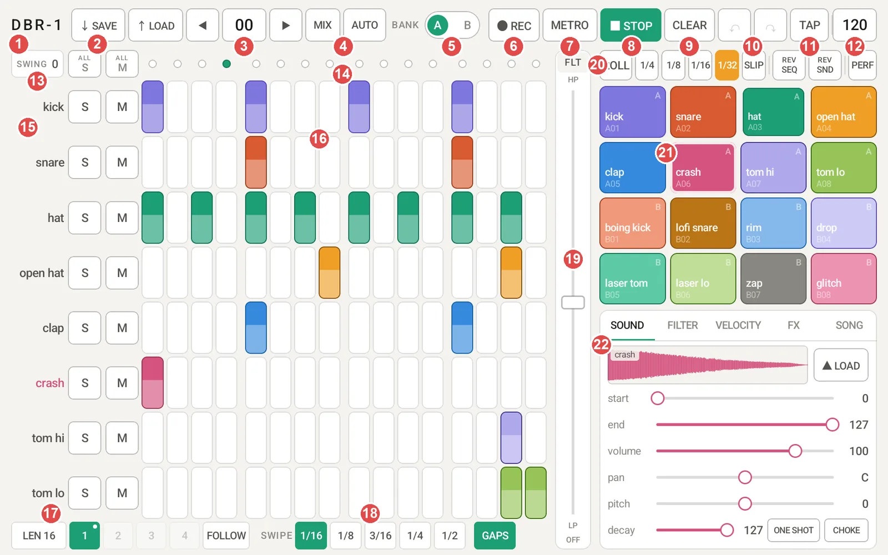
| # | Name | What it does |
|---|---|---|
| 1 | Logo | Tap for the menu: this Manual, MIDI settings (MIDI…), audio inputs and outputs (Audio I/O…), moving knobs with automation (Animate automation), whether PLAY after STOP starts over or continues (After STOP), when a pattern change happens while playing (Pattern switch), the phone-style layout (Phone layout), About |
| 2 | SAVE / LOAD | Save and load projects, patterns and kits (→ 10). LOAD → Templates… for classic genre beats (→ 2), Demo songs… for the demo songs (→ 2) |
| 3 | Pattern number | ◀ ▶ to change (00–99). Tap the number to type it; long-press for Copy / Paste / Clear (also FX only) |
| 4 | MIX / AUTO | MIX switches between the step view and the mixer (→ Mixer); AUTO opens the automation view (→ Automation). On the mixer, AUTO and PERF screens, the device Back button closes that screen |
| 5 | BANK A / B | Shows tracks A01–A08 or B01–B08 |
| 6 | REC | Arms recording. Pads you hit while playing are recorded (→ 4) |
| 7 | METRO | Metronome on / off |
| 8 | PLAY / STOP | Start and stop. By default PLAY after STOP starts from the top. Set After STOP in the menu to continue to carry on from where you stopped (while the pattern / song row is unchanged; choosing a pattern while stopped, or playing a song to its end, starts over. When sending MIDI clock, DBR-1 sends the position (Song Position Pointer) and Continue) |
| 9 | CLEAR | Clears the steps of the bank on screen (asks first; ↶ brings them back) |
| 10 | ↶ ↷ | Undo / redo (up to 100 steps) |
| 11 | TAP | Tap along with the beat to set the tempo |
| 12 | BPM | Tempo. Tap for a slider, long-press to type a number (→ 9) |
| 13 | SWING / ALL S / ALL M | Swing (drag sideways), and solo / mute for the whole bank |
| 14 | Position | The step that is playing. Lights red during the recording count-in. The step buttons that play also flash, like the pads |
| 15 | Track name, S, M | Tap to select, long-press for the track menu (→ 3). S = solo, M = mute |
| 16 | Steps | Tap to turn on / off. The bar inside shows the velocity |
| 17 | LEN, pages, FOLLOW | Pattern length (1–64 steps), the page on screen (1–4), and whether the page follows the playhead |
| 18 | SWIPE, GAPS | Spacing used when you swipe across steps (→ 2) |
| 19 | FLT (master filter) / USER | Up = high-pass, down = low-pass. Tap the name above it to switch to USER1, USER2 … (adds to / subtracts from assigned parameters); long-press to assign (→ 7) |
| 20 | ROLL, SLIP, REV, PERF | Performance buttons (→ 7). PERF opens the performance screen (→ 7) |
| 21 | Pads | Hit to play the sound and select that track. While playing, the pad of each track that plays lights up |
| 22 | Tabs | SOUND / FILTER / VELOCITY / FX / SONG |
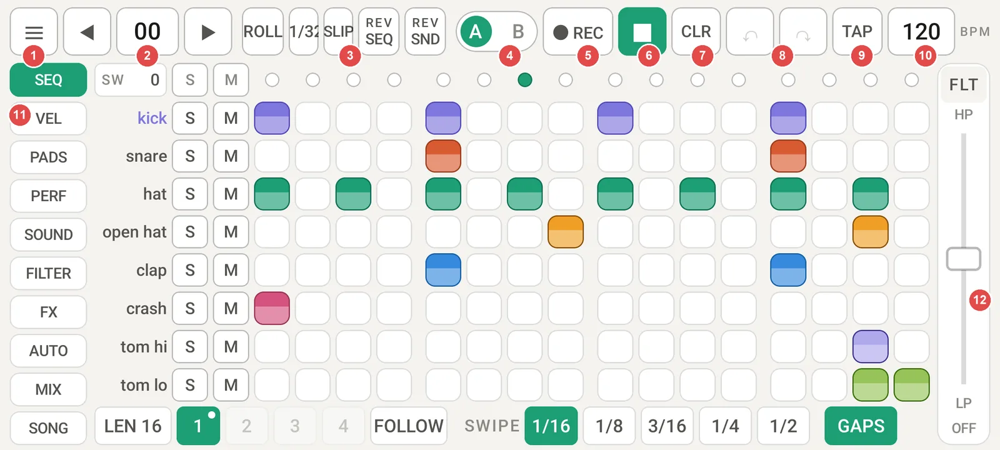
| # | Name | What it does |
|---|---|---|
| 1 | ≡ menu | Save / load, Metronome, Manual, MIDI, Audio I/O, Animate automation, After STOP, Pattern switch, About. On a tablet set to Phone layout, Tablet layout at the top switches back |
| 2 | Pattern number | Same as on the tablet |
| 3 | ROLL, length, SLIP, REV | Tap the length to cycle 1/4 → 1/8 → 1/16 → 1/32 |
| 4–10 | BANK, REC, ▶, CLR, ↶↷, TAP, BPM | Same as on the tablet |
| 11 | Views | SEQ (steps) / VEL / PADS / PERF (performance screen, → 7) / SOUND / FILTER / FX / AUTO (automation) / MIX (mixer) / SONG. Long-press a tab (it vibrates) and drag up or down to reorder them to suit your genre or workflow (saved on the device; "Reset tab order" in ≡ restores the default). The device Back button returns to SEQ from any other view, and closes the app from SEQ |
| 12 | FLT | Master filter / USER (available on every view except PERF) |
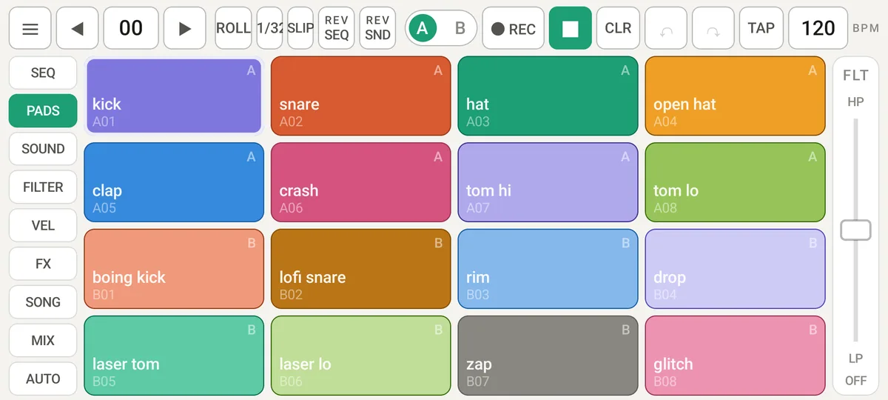
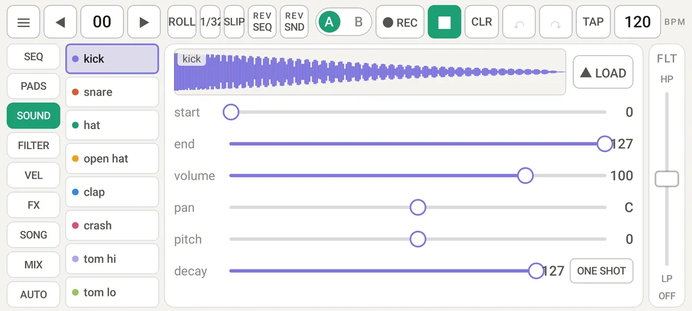
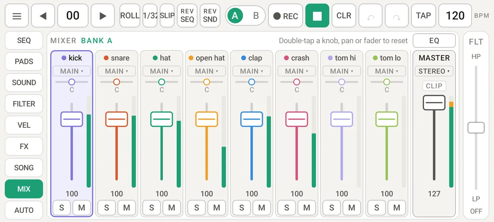
LOAD → “Templates…” puts a classic beat from one of 10 genres (Hip-Hop, Trap, Lo-Fi, House, Techno, Drum & Bass, Funk, Rock, Reggaeton, Afrobeats) into the current pattern number. The BPM and SWING change to suit the genre.
LOAD → “Demo songs…” loads ten songs made only with DBR-1's own features. Press PLAY to hear them all the way through (PLAY mode is SONG). You can watch how they are built while they play: automation (AUTO), FX scenes, per-pattern tempo, basslines made with pitch locks and more.
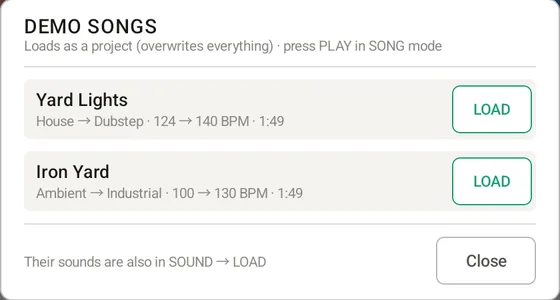
| Song | What it is |
|---|---|
| Sequence Yard | Techno (134 BPM). Mechanical sequences of different lengths (12, 10, 9, 7 and 5 steps) drift against the four-on-the-floor, with an acid line and dub chords (per-track length → 3) |
| Let's Play Sequence | Digital funk (108 BPM). Starts from a lone hi-hat and builds up part by part: kick and snare → slap bass → clav and brass → wah chords and a lead. Heavy SWING makes it bounce, with triplet conga, snare and brass (→ 3) and a cowbell and zap looping every 6 and 5 steps |
| Yard Lights | Heavy industrial (120 BPM). Like a stopped factory starting up: from a furnace drone and steam, distorted kicks, rumble, metal being crushed and torn, and a grinding bass pile up. A drop that starts with a hammer blow, a half-time stomp section, a machine and a chain looping every 12 and 7 steps (per-track length), and build-ups that tighten into 1/16T |
| Haze Yard | Ambient (100 BPM) → dream pop (112 BPM). Minimal, poppy sequences of different lengths (an arpeggio, stars and blips looping every 12, 7 and 5 steps) scattered across a vast, ocean- or space-like reverb, with a tape-like wobbling delay |
| Candy Yard | Uptempo chiptune (150 BPM). Every sound is made like an old game console's sound chip: only pulse waves, a triangle wave and noise, with 16 volume levels and pitch that moves in 1/60-second steps. Fast arpeggios play the chords, moved with pitch locks. The lead has an echo 3 steps behind, a "pickup" blip loops every 5 steps (per-track length), a tom rolls in 1/16T, and the final chorus jumps up a whole step |
| Velvet Sequence | R&B / neo soul (84 BPM). Opens with vinyl crackle and a muffled electric piano, then a lazy, swung groove (SWING 28), an 808 bass whose pitch glides along a drawn line (AUTO), a tremolo electric piano (a pan line), an "ooh" choir and a smooth lead. The second verse rolls its hi-hats in 1/16T |
| Abyss Yard | Deep trance inspired by the deep sea (126 BPM). It dives in from a low, pressure-like rumble and sonar pings. A low, round kick, dark hi-hats and a rolling bass deep down are joined by a stab looping every 6 steps and water drips every 7, drifting against each other in a hypnotic groove, with bubbles and a distant whale. The breakdown opens up a progression of dark pads, a swell rising toward the surface and a 1/16T clap roll lift it into the full mix, and at the end it sinks away behind the low-pass filter. A sidechain from the kick (FX → MASTER) makes it pump slowly |
| Driving Sequence | Breakbeat / big beat (135 BPM). A fat break built hit by hit (ghost snares with probability, choked hi-hats) under a gritty FM bass riff that opens up along a cutoff line. A supersaw power chord on the left, an organ on the right, brass stabs, orchestra hits, scratches and shouts ride a bright E D A E progression |
| Container Yard | Lo-fi house (120 BPM). Gritty sounds made like an old sampler, with lowered sample rate and bit depth: Dm7 B♭add9 Fadd9 Cadd9 synth chords (with a cutoff line) and a chopped vocal hook over four-on-the-floor, with a shaker on probability, ratcheted clap rolls and a tape stop. A sidechain from the kick (FX → MASTER) makes it pump |
| Sequence Orbit | Math rock in 5/8 (138 BPM). The pattern length is 40 (bars of 10 steps = 3 + 2 eighths, × 4), with a sparkling tapped guitar (Amaj9 E F#m11 Dmaj9) that flies between left and right on a sine-wave pan line (AUTO), circling faster and wider as the song builds, a bouncing bass and ratcheted tom fills. It opens up by switching to a 4/4 pattern of length 64, and in the breakdown a glockenspiel of length 16 orbits over the 5/8, lining up again every 5 bars (pattern and per-track length → 3) |
Long-press a step until it vibrates, then drag up or down to set its velocity (0–127). Move slowly for fine steps; faster moves change it more (the mixer's EQ knobs work the same way). The VELOCITY tab edits all 16 steps of the selected track at once.
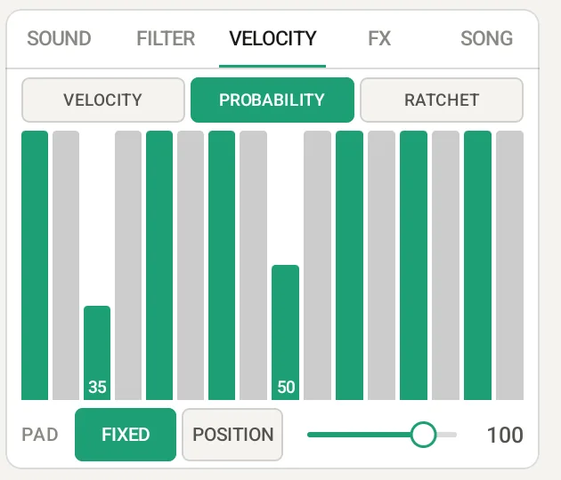
The three buttons at the top of the VELOCITY tab choose what the bars edit. Each is a per-step value of the selected track, saved with the pattern (↶ undoes it).
| Button | What it does |
|---|---|
| VELOCITY | How hard the step plays (0–127) |
| PROBABILITY | The chance that the step plays (0–100%, in 5% steps). The phrase changes a little every time, so a pattern stays fresh. Steps below 100% get a triangle in the top-right corner |
| RATCHET | Splits one step into 1–4 hits (fast hi-hat runs and rolls). Steps with 2 or more get dots along the top. On swung steps and triplet tracks, the hits divide that step's own length |
Tap LEN to open a menu and set the pattern length from 1 to 64 steps (1 step = a 16th note): − / + change it by one, and buttons pick common lengths (picking one closes the menu). A longer pattern is filled by repeating what is already there.
Buttons 1–4 choose the page on screen (a dot marks the page that is playing). Long-press a page to copy / paste / clear it (all A/B tracks).
With FOLLOW on, the page on screen follows the playhead during playback (for live play). With it off, the page you chose stays put (for programming).
Drag SWING sideways (0–100). The off-beat 16th notes are delayed for a shuffled feel. Swing is saved per pattern.
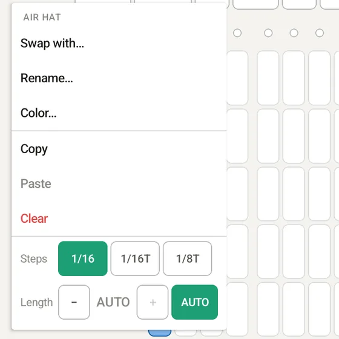
| Item | What it does |
|---|---|
| Swap with… | Pick any of the 16 tracks to swap everything: sound, name, color, settings and the steps of all patterns |
| Rename… | Rename the track (pad), up to 16 characters |
| Color… | Pick the track (pad) color from 20 colors, or make your own with Other…. The pad, steps, name and SOUND tab change color |
| Copy / Paste / Clear | This track's steps in this pattern |
| Steps | How long one step is: 1/16 (normal) / 1/16T (16th-note triplets, 24 cells per page) / 1/8T (8th-note triplets, 12 cells per page). See below |
| Length | A length for this track only (1 up to the pattern length, AUTO = follow the pattern). Mixing lengths makes polyrhythms. Shortening the pattern also shortens longer tracks (only when Steps is 1/16) |
Use Steps in the track-name long-press menu to turn a single track into triplets. A triplet track shows 12 cells (1/8T) or 24 cells (1/16T) across one page (one bar), with 3 or 6 cells per beat, so you can line it up by eye with the 16th notes on the other tracks. 1/8T or 1/16T appears under the track name.
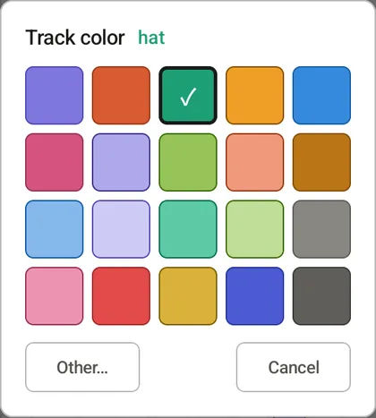
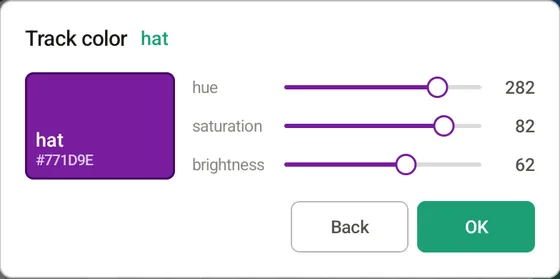
A color you made yourself appears next to Other… in the palette.
Hitting a pad plays its sound and selects that track (switching the bank if needed).
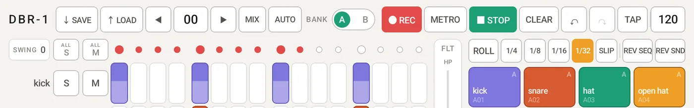
Touch screens cannot sense how hard you press, so choose at the bottom of the VELOCITY tab: FIXED = always the same velocity (set with the slider), POSITION = louder toward the top of a pad, softer toward the bottom.
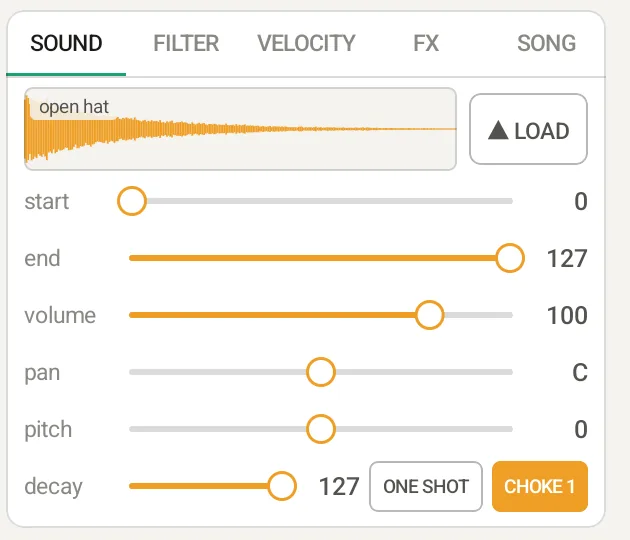
| Item | What it does |
|---|---|
| LOAD | Opens the sound browser (SOUNDS) to replace the selected track's sound (→ Sound browser below) |
| start / end | Which part of the sample plays |
| volume / pan | Level and left-right position |
| pitch | −12 to +12 semitones (the length changes too) |
| decay | How the sound fades (127 = play to the end) |
| ONE SHOT / GATE / BAR | Play mode (tap to change). ONE SHOT = play to the end, GATE = stop after one step, BAR = stop at the end of the pattern. Handy for long loops and vocals that should stop with the bar |
| CHOKE | Choke group (tap: OFF → 1 → 2 → 3 → 4). When any track in a group plays, the other tracks in that group stop within about 5 ms. Put the closed and open hi-hat in the same group and the closed hat cuts the open hat's ring, like a real hi-hat. Saved with the kit |
Opens the sound browser (SOUNDS), where you find a sound for the selected track (shown at the top left as "→ A01 …").
Top tabs: USER (your own sounds: the audio files in DBR-1/Samples and the sounds in DBR-1/Sounds) / PRESET (the 52 built-in sounds: BANK A / BANK B / EXTRA / POP / TRANCE) / DEMO (the demo songs' sounds, by song).
USER tabs: after ALL and UNSORTED (sounds in no tab) you can make your own tabs and sort sounds into them (+ TAB to add; long-press a tab to rename, move or delete it — deleting a tab keeps its sounds). Choose a sound's tab with TAB ▾ on its row.
Each row: ▶ preview (plays the raw sound without loading it; tap again or ■ to stop) / name (tap to load it into the track; the browser stays open so you can compare) / category (KICK, SNARE, HAT, …; tap to choose, or New category… for your own name; a sound without one shows a faint guess from its name) / KEY (the pitch, e.g. E2 or C#5; chords such as Dm9; UNKNOWN for drums, ambience and noise without a clear pitch. Built-in sounds show the note they were made at; your own sounds show, faintly, the key DBR-1 detected by listening to them — they are checked one by one the first time, "…" while in progress. Tap it to open the key picker: a tuner (detected note, offset in cents, frequency) with Use … for the suggested key, OCTAVE and 12 note buttons, UNKNOWN, Chord / other… to type a chord, and Auto to clear your key and go back to the detected one. Keys you set are shown in a strong colour) / format (WAV, MP3, AIFF, …; DBRSND = sample plus settings) / rating ★1–5 (tap the same star again for 0) / for USER, ⋯ to share or delete.
Filters: Search (name, category or group; a key only on an exact match such as C#5) / CATEGORY / FORMAT / ★ (n stars or more) / SORT (list order, name, rating, category, key from low to high, newest).
Bottom row (⋯ on phones): From file… (a file on the device or in the cloud) / ● Record… (from a microphone, an audio interface or DBR-1 itself; slicing and time stretch are here too → below) / ✦ GENERATE… at the top right (build a sound from waveforms → below) / Save this sound… (saves the selected track's sound — sample plus settings such as filter, INSERT and EQ — in DBR-1/Sounds; if a USER tab is open, it goes into that tab) / Change folder (in USER; pick the save folder again). Loading a .dbrsnd asks first. Undoable.
Pitched built-in sounds show their note (e.g. D5; A4 = 440 Hz, middle C = C4) and chord sounds their chord name (e.g. Dm9); a ~ (cowbell, conga) marks a percussive sound's nearest note.
Preview plays the raw sound (the track's pitch, filter and FX are not applied). Categories, ratings and tabs are also copied to DBR-1/sound_library.json in your save folder, so they come back after reinstalling
| Item | Spec |
|---|---|
| Formats | WAV, AIFF, MP3, M4A (AAC), OGG, FLAC |
| Sample rate | 8–192 kHz |
| Length | Up to 60 seconds each (only the first 60 seconds of a longer file are used) |
| Stereo | Mixed down to mono |
Tap ✦ GENERATE… at the top right of the SOUND tab's LOAD screen (✦ GEN on phones) to build a sound from waveforms. The result goes to the sampling screen, and from there into the selected track. Use it when the presets don't have what you need, or to quickly make basses, chords, pads and drums.
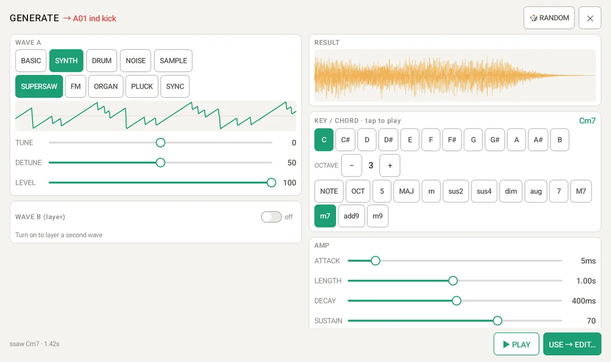
The screen doesn't scroll: tabs on the left switch pages (tablet = WAVE A · B / KEY · AMP · FILTER; phone = WAVE A / WAVE B / KEY / AMP / FILTER, so your left hand picks the tab and your right hand works the controls). The top row shows the finished sound's waveform, name and length, plus 🎲 RANDOM, ▶ PLAY, HOLD and USE → EDIT…. With HOLD on, the sound keeps repeating; move the filter or anything else and it switches to the new sound at the same position, so you can tweak while listening (tap again or PLAY to stop).
RESET on WAVE A / B, AMP and FILTER returns that panel to its defaults. KEY is a keyboard (the chord tones light up too) with + / − for the octave on the right, and the chord is written on a grand staff (below on tablets, on the right on phones; root position only, no inversions; notes are spelled by interval, e.g. Cm7 = C, E♭, G, B♭).
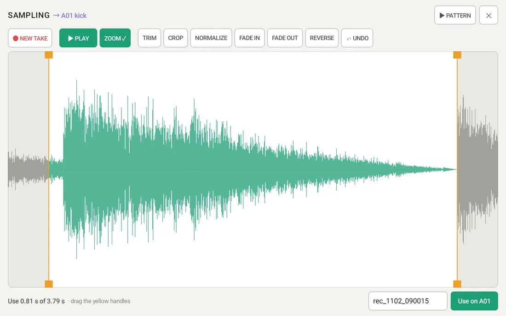
LOAD → “● Record (mic / audio input)…” in the SOUND tab records from a microphone or an audio interface and puts the sound on the selected track. The first time, Android asks for permission to use the microphone (it is used only on this screen, and recordings never leave your device). Recording DBR-1 itself (resampling), cutting a rhythm onto separate pads (slicing) and changing the length (STRETCH) are also done on this screen.
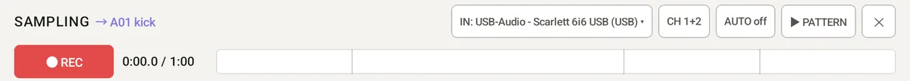
| Button | What it does |
|---|---|
| ▶ PLAY | Plays the selection |
| ZOOM | Zooms in on the selection for fine adjustment (on the start when everything is selected). Pinch the waveform with two fingers to zoom, drag with two fingers to scroll. A seconds ruler along the bottom gets finer as you zoom in (down to 1 ms). While zoomed, a scroll bar under the waveform shows the whole recording and a frame for the part you are viewing: drag the frame to move, or tap elsewhere on the bar to jump there |
| TRIM | Cuts the silence at the start and end |
| DENOISE | Reduces steady background noise (air conditioning, fans, hiss). It learns the noise from the quietest parts of the recording, so leave a little silence before or after the sound. It works gently to keep the decay of the sound; press again for more (the sound thins out too; UNDO goes back) |
| CROP | Keeps only the selection |
| NORMALIZE | Raises the level of the selection so its loudest point is near full scale (if it already is, you see “Already at full level”) |
| FADE IN / FADE OUT | Fades the selection in / out |
| REVERSE | Reverses the selection |
| STRETCH | Changes the length of the selection without changing its pitch (time stretch). FIT TO BARS (1/2 / 1 / 2 / 4 / 8 bars) makes it exactly that many bars at the current tempo; FROM TEMPO converts from the tempo it was recorded at (a guess is filled in) to the current tempo. 50–200%. Large changes make the sound waver. It may take a moment (WAIT…). UNDO goes back |
| ↶ UNDO | Undoes the last edit |
| RATE / BIT | (bottom row) Lowers the sample rate (samples per second: as recorded / 32k / 26k / 22k / 12k / 8k) and bit depth (16 / 12 / 8) when the sound goes onto the track, for a gritty vintage-sampler sound. PLAY lets you hear it first; the recording itself is not changed |
| ● NEW TAKE | Records again (discards the current take) |
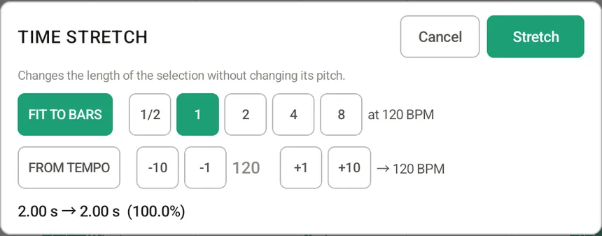
KEY in the bottom row is a tuner: it checks the pitch of the selection and shows e.g. "KEY E2" or "KEY A3 −12¢" (UNKNOWN if there is no clear pitch). Tap it to choose another key in the key picker. When Use on A01 saves the sound to DBR-1/Samples, this key goes into the KEY column of the sound browser.
Give it a name and press Use on A01 (the selected track): the selection becomes that track's sound. If a save folder is set, it is also saved as a WAV in DBR-1/Samples so you can use it in other projects. ✕ closes the screen without using the recording.
Choose DBR-1 output (resample) in IN to record what DBR-1 is playing, as you hear it (after the effects, MASTER and the master filter). Use it to turn a pattern into a single loop, or to make a new sound from an effected one (no microphone permission needed).
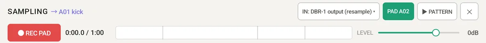
Cut a recorded rhythm into its hits and put each one on its own track (pad). Open it with SLICE ▸ at the right end of the edit row (the part between the yellow handles is sliced).
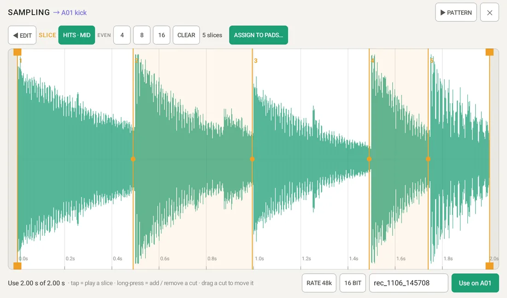
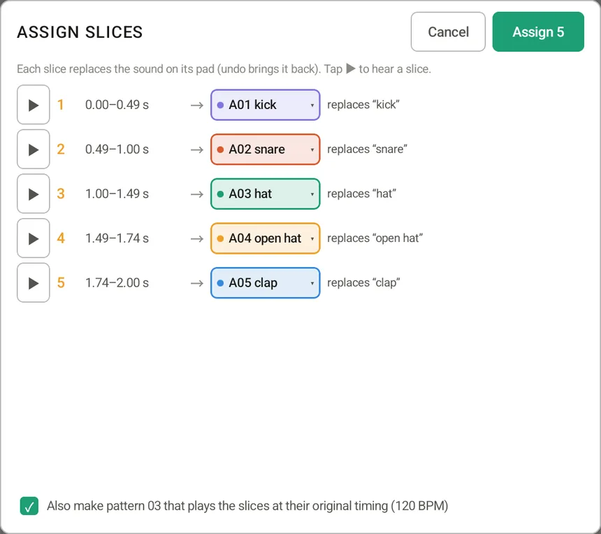
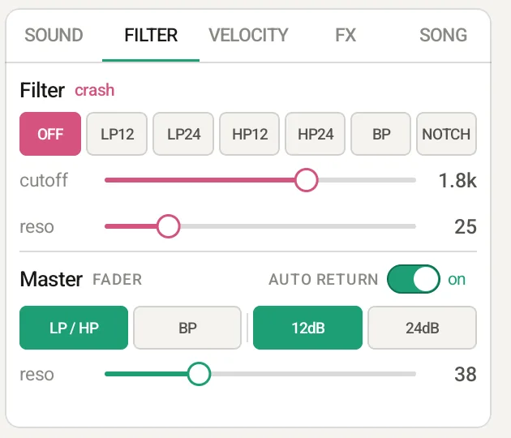
Shows the 8 tracks of the current bank plus MASTER so you can balance the whole mix in one place. On a tablet, MIX in the header switches between the step view and the mixer; on a phone, open MIX on the left. Use BANK A / B for the other bank.
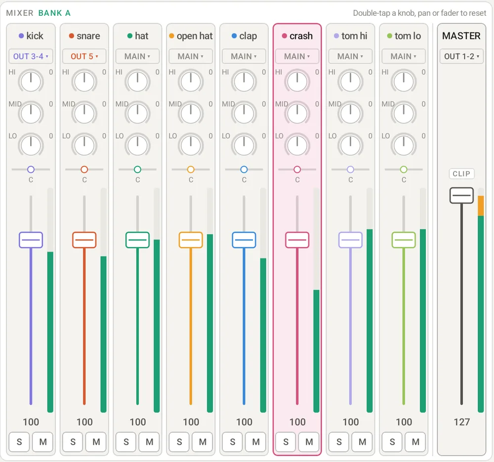
| Part | Action | What it does |
|---|---|---|
| Track name | Tap | Selects the track (no sound) |
| EQ (HI / MID / LO) | Drag up/down / double-tap / long-press | Boost or cut highs (8 kHz and up by default), mids (around 1 kHz) and lows (100 Hz and below) by up to ±12 dB. Drag up to boost; double-tap for 0. Long-press (vibrates) for a slider that sets the band's frequency (LO 30–500 Hz, MID 200 Hz–8 kHz, HI 2–16 kHz; Reset for the default). The frequency is shown at the knob's bottom left, in the track's color once changed. For example: LO at 60 Hz on the kick to add weight only, or MID around 3 kHz on the snare to bring out the attack. On a phone, tap EQ at the top right to show the knobs in place of the faders |
| pan | Drag sideways / double-tap | Left–right position. Double-tap for C (center) |
| Fader | Drag up/down / double-tap | Volume (0–127). It moves by how far you drag, not to where you touch. Double-tap for 100 (default) |
| Meter | — | The track's level (after volume and pan, before effects). Yellow above −6 dB |
| S / M | Tap | Solo / mute (same as S / M in the sequencer) |
| MASTER | Drag up/down / double-tap | Overall volume (0–127, double-tap for 127). Its meter shows the output. A limiter just before the output automatically holds back peaks when sounds pile up, so the output normally does not distort; CLIP lights red only when it is far too loud even for that |
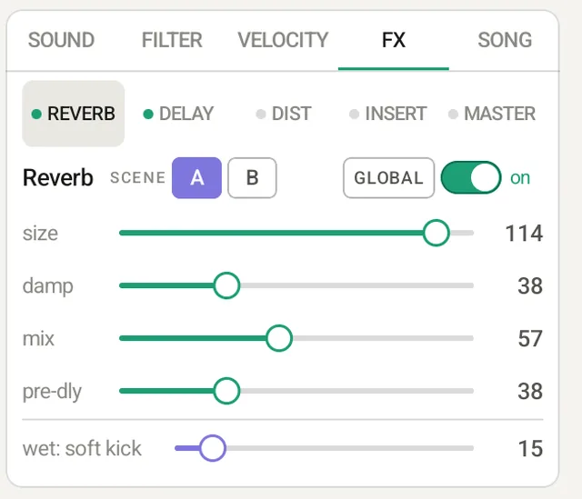
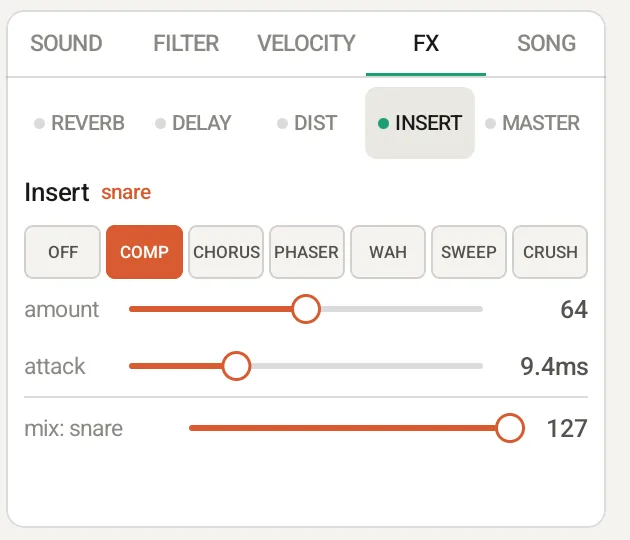
Each track can have one effect of its own. It comes after the filter and before DIST, and is saved with the sound (the kit). There are two knobs and mix (how much is blended with the dry sound). Choosing a type sets the knobs to good starting values.
| Type | Knobs | Use it for |
|---|---|---|
| COMP | amount · attack (0.5–30 ms) | Fatter kicks and bass, punchier snares. A longer attack keeps the hit. Level is made up automatically |
| CHORUS | rate (0.1–5 Hz) · depth | Widening pads, bells and chords |
| PHASER | rate (0.05–4 Hz) · depth | Swirling hats and synths |
| WAH | sens · reso | Auto-wah that opens with how hard the sound hits — funk bass and clav |
| SWEEP | rate (2 bars, 1 bar, 1/2, 1/4, 1/8, 1/16) · depth | A low-pass that opens and closes in time; it lines up at the start of playback |
| CRUSH | bits (16–3) · rate (48k–1.5 kHz) | Lo-fi grit, old-sampler style |
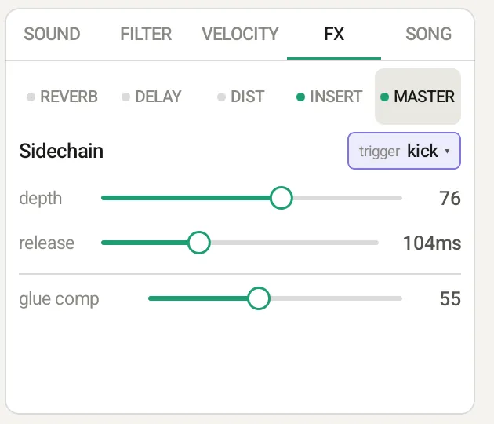
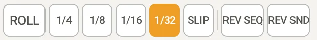
| Button | Action | What it does |
|---|---|---|
| ROLL | Hold | Repeats the chosen length from the nearest division before the press (an 8th note for 1/32, 1/16 and 1/8; the beat for 1/4 and longer), so pressing on a quiet off-beat step still repeats the strong step. The position on screen loops with it |
| 1/4 · 1/8 · 1/16 · 1/32 | Tap | Roll length. 1/4 = 4 steps, 1/16 = repeat one step, 1/32 = repeat at double speed |
| SLIP | On / off | What happens when you release ROLL. Off (default) = continue right after the rolled steps. On = jump to where the pattern would have been (it kept running underneath) |
| REV SEQ | On / off | Plays the steps backwards |
| REV SND | On / off | Plays samples backwards |
Move the vertical fader up from the center for a high-pass (thinner sound) or down for a low-pass (darker sound). Around the center it is off. Change its type in the Master part of the FILTER tab.
Each tap on the name above the fader (FLT) switches the fader through FLT (master filter) → USER1 → USER2 → … → FLT (USERs with nothing assigned are skipped). In a USER, the fader adds to or subtracts from the parameters you assign, all at once (for example: open the grinder's cutoff while deepening the reverb and pulling the kick down).
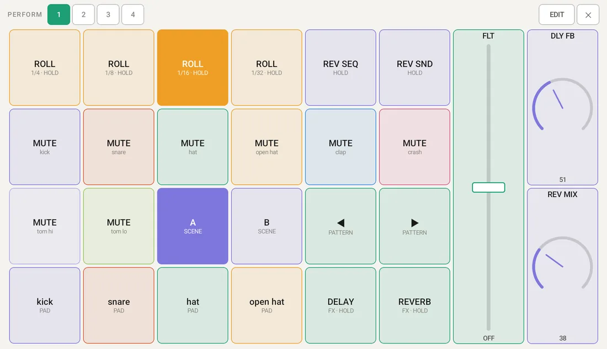
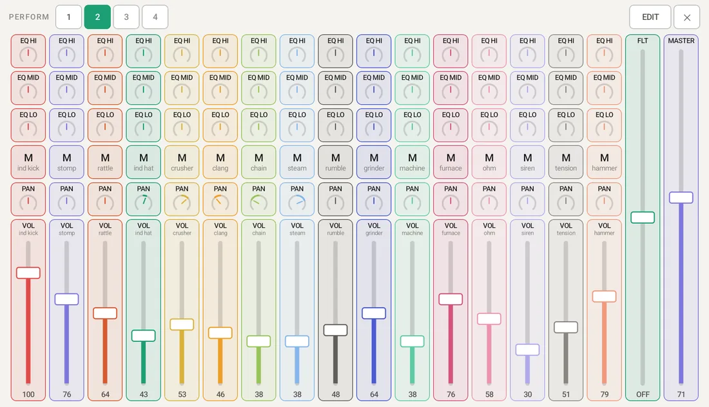
A screen for playing live while the sequence runs. Place buttons, faders and knobs of any size on an 18×10 grid to build your own performance surface. On tablets, open it with PERF above the pads; on phones, with the PERF tab on the left (below PADS). On tablets, ✕ at the top right goes back.
Arranging (EDIT): Press EDIT at the top right; empty cells show "+".
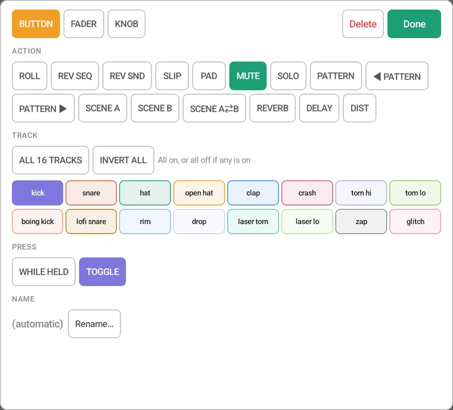
| Button ACTION | What it does |
|---|---|
| ROLL | Choose a LENGTH (1/4–1/32); repeats while held. Make one button per length if you like. With two held, the one pressed last plays; releasing it returns to the other |
| REV SEQ, REV SND, SLIP | Same as the performance buttons above |
| PAD | Plays the track's sound (recorded while REC is on; strength follows the pad velocity setting) |
| MUTE, SOLO | Pick one track under TRACK, or ALL 16 TRACKS (all on — or all off if any is on) or INVERT ALL (flips each of the 16 tracks on ↔ off) |
| PATTERN, ◀ PATTERN, PATTERN ▶ | Go to a set pattern number / the previous or next pattern. While playing, the change follows Pattern switch in the menu; a PATTERN button can set its own timing with SWITCH (while playing) (DEFAULT = follow the menu, the default / BAR / BEAT / NOW). With PRESS set to WHILE HELD, the pattern plays only while you hold the button and goes back to the previous one when you let go (unless you picked another pattern meanwhile; with NOW, a hold-to-play fill) |
| SCENE A, SCENE B, SCENE A⇄B | Switch the FX scene |
| REVERB, DELAY, DIST | Turn the effect on / off |
| MIDI | Sends MIDI to external gear (see "MIDI parts" below). SEND: NOTE (press = note on, release / press again = note off; VALUE = velocity) / CC (press = VALUE, release / press again = 0) / PROGRAM (a program change when pressed) |
PRESS: WHILE HELD = only while pressed (returns to the previous state on release), TOGGLE = switches on each press. NAME sets a name of up to 10 characters (empty = automatic).
| Fader / knob CONTROLS | What it does |
|---|---|
| FLT | Master filter (up = high-pass, down = low-pass) |
| USER | Adds / subtracts a USER1–8 assignment (→ USER). It adds up with the main fader's USER, and any number can move at once. Edit USER… opens the assignment screen |
| MIDI (external) | Sends MIDI to external gear. SEND picks the value format: CC 0–127 (bottom = 0, top = 127) / CC PAN (center = 64, shown L64 – C – R63, for parameters with a center such as pan) / PITCH BEND (14-bit, center = 0) / AFTERTOUCH (channel pressure 0–127) |
| PARAMETER | A single parameter. Under TARGET, choose SELECTED TRACK, a fixed track (17 parameters) or FX / MASTER (13 parameters) |
ON RELEASE: RETURN = goes back when you let go (FLT and USER to the center, a parameter to its value before you touched it), STAY = stays. Faders jump to where you touch; knobs turn by dragging up / down (or left / right). Move slowly for fine steps; the faster you move, the bigger the change (up to 4×), so one flick goes end to end.
Parts for running external synths, effects, lights and so on with DBR-1 as the master. Choose MIDI as a button's ACTION, or MIDI (external) under a fader's or knob's CONTROLS.
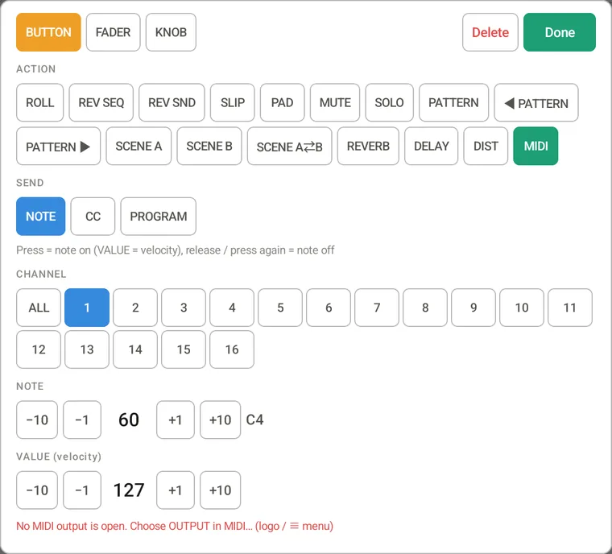
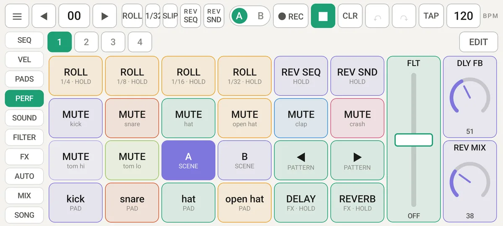
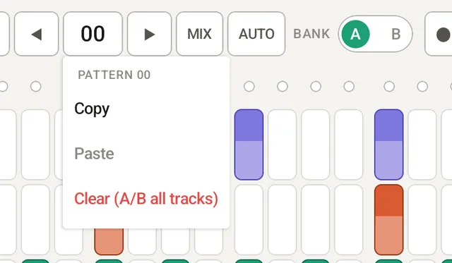
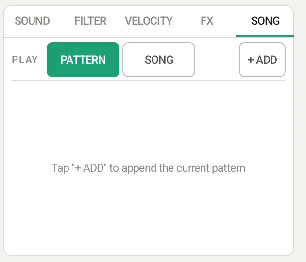
Volume, pan, filter, EQ, sends, effects, master volume and more can move within a pattern. On a tablet, tap AUTO in the header; on a phone, open AUTO on the left. Automation is saved with each pattern.
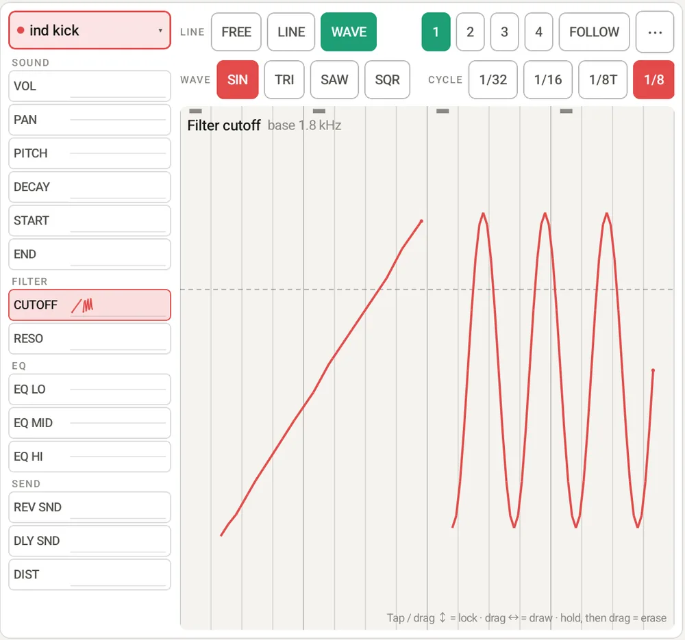
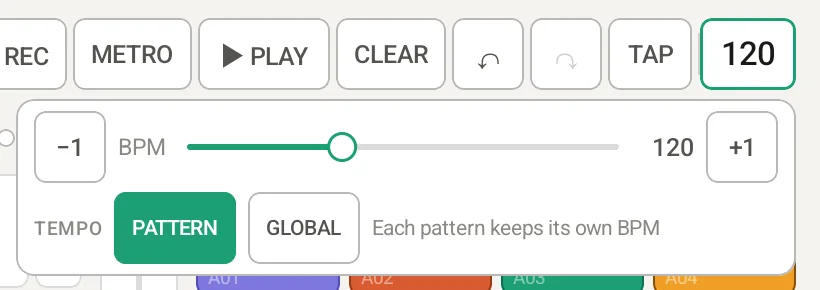
TEMPO below the slider chooses how the tempo is kept.
| Type | Contains | File |
|---|---|---|
| Project | All 100 patterns, kit, BPM and song (including sounds you loaded) | .dbrproj |
| Pattern | The current pattern (no kit) | .dbrpatt |
| Kit | Sounds and settings of the 16 tracks | .dbrkit |
Choose a save folder once. DBR-1 creates a DBR-1 folder inside it (Projects / Patterns / Kits / Samples, and Sounds once you save a sound).
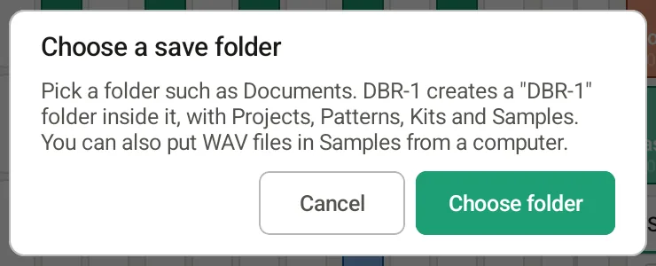
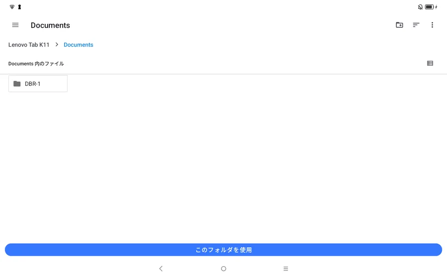
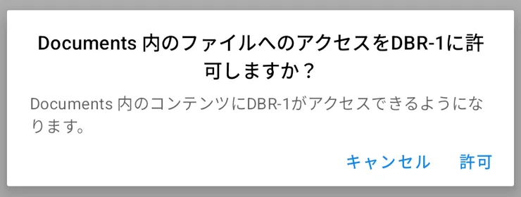
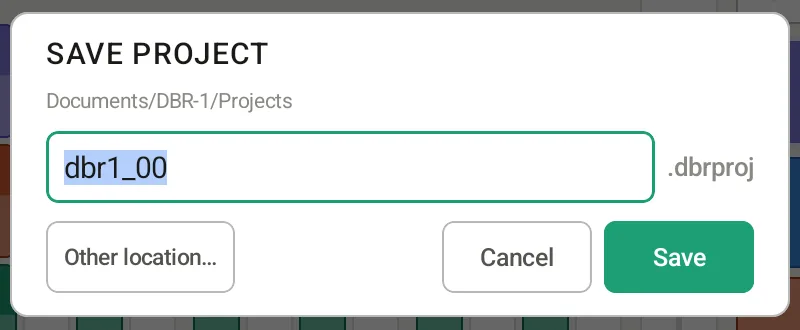
SAVE → choose a type, then press Save (you can keep the suggested name). If a file with the same name exists, you are asked before it is overwritten. Other location… opens Android's save screen, so you can save straight to Google Drive or other cloud storage.
Names can use any language and emoji. Characters that file names cannot hold (\ / : * ? " < > |) become "_", and spaces and dots at either end are removed. Names that differ only in upper/lower case count as the same file, so you are asked before overwriting.
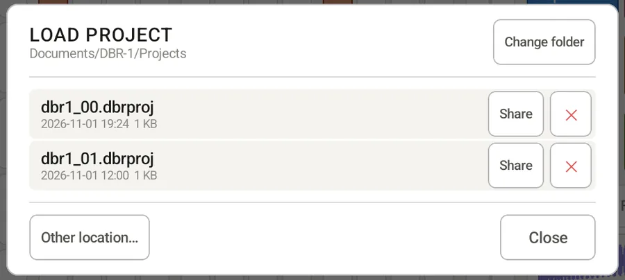
SAVE (≡ on phones) → Audio export… turns your music into an audio, video or MIDI file.
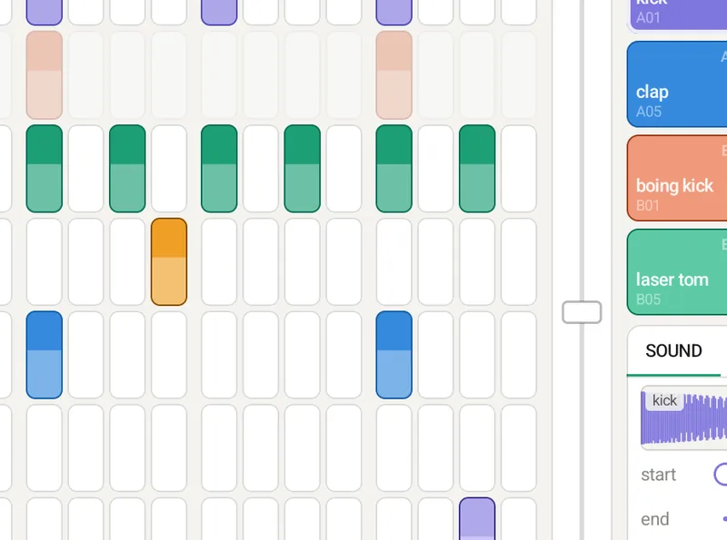
| WHAT | Contents |
|---|---|
| PATTERN | The current pattern ×1 to ×16, rendered much faster than real time |
| SONG | The SONG tab from the first row to the last |
| RECORD | Records exactly what you hear (pads, ROLL, REV and the filter included). While recording, stop with ■ STOP at the top left (in place of ≡ on phones). Up to 10 minutes. With MP4 VIDEO it becomes a screen recording: the DBR-1 screen plus a circle where your fingers touch (1280 wide, 30 fps). The STOP bar and dialogs are not recorded |
| FORMAT | Best for |
|---|---|
| WAV | Uncompressed (16-bit stereo). Editing in a DAW. For PATTERN / SONG, RATE picks 48 kHz or 44.1 kHz to match your DAW project (STEMS too) |
| M4A | AAC 256 kbps. Small files for LINE, Discord, email and cloud storage |
| MIDI | Standard MIDI file (PATTERN / SONG only), for carrying on in a DAW or another drum machine. Note numbers follow NOTES in MIDI… (PADS 36–51 / GM DRUMS). Swing and per-track lengths are included; muted tracks (or non-solo tracks while soloing) are left out. TYPE: 1 · TRACKS = one track per sound (named after the track) / 0 · SINGLE = everything in one track (for gear that cannot read Type 1). CH: CH 10 = everything on channel 10 / CH 1–16 = TRACKS = A01–B08 on channels 1–16 (the same order as the CC "CH = TRACK" setting in MIDI…). AUTO: CC = automation (locks and drawn lines) written as CCs (numbers from the CC assignments in MIDI…; parameters without a CC are skipped). Track values go on that track's channel; FX / MASTER go on the OUT CH in MIDI… (in Type 1, a last "FX / MASTER" track). On channel 10 the CCs of different sounds share one channel, so choose CH 1–16 when you use automation |
| STEMS | A ZIP (PATTERN / SONG only) with the full mix (00_mix.wav) and one WAV per track that has steps (01_A01_kick.wav …), 16-bit stereo at 48 or 44.1 kHz. Each track includes its own reverb, delay and FX; every file is the same length and starts at 0:00, so they line up as soon as you drop them into a DAW. Muted tracks are left out. It renders once per track, so it takes a little longer |
| MP4 VIDEO | PATTERN / SONG: a video (720×720) with a picture of the pattern. RECORD: a screen recording. For X, Instagram, TikTok and other video-first networks |
PATTERN and SONG exports end with the reverb and delay tail. Files are saved in DBR-1/Exports; when finished, Share sends the file straight to an app.
Connect a USB-MIDI device (pad controller, keyboard, the MIDI ports of an audio interface, …) and DBR-1 uses it automatically. Settings are under MIDI… in the logo menu (≡ on phones).
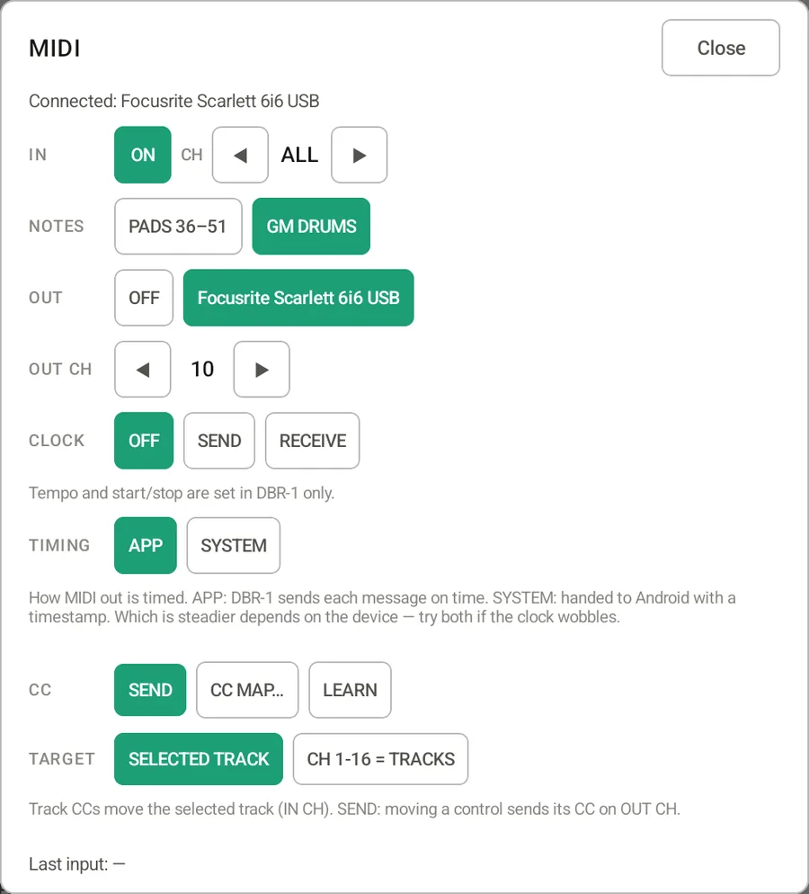
| Item | What it does |
|---|---|
| IN (on/off, CH) | Incoming notes play tracks and are recorded while REC is on (with their velocity). CH = channel to listen to (ALL / 1–16) |
| NOTES | How note numbers map to tracks. PADS 36–51 = notes 36–51 to A01–B08 in order. GM DRUMS = standard drum notes (kick 36, snare 38, hat 42, …). The same map is used for output |
| THRU (ON / OFF) | MIDI thru: what you play on connected devices (notes, CC, pitch bend…) is passed as is to the OUT device, on its original channel. Normally nothing from the OUT device itself is sent back to it; clock and SysEx are not passed. Incoming notes still play DBR-1's tracks as before. ☐ ALSO FROM OUT DEVICE (while THRU is ON): when checked, what comes in from the OUT device is passed too. Check it when one MIDI interface carries both (keyboard on its IN, sound module on its OUT); otherwise nothing is passed. If it is checked and a synth is connected directly as OUT (not through an interface), the synth's own notes come back to it and may play twice or hang. Uncheck it, or set the synth's Local Control to OFF If devices are cabled in a loop, the same notes may be sent around repeatedly |
| OUT / OUT PORT / OUT CH | Device and channel to send to (default ch 10). For devices with several outputs (MIDI interfaces), OUT PORT picks the port. Sends the sequence, rolls and pad hits, delayed to line up with DBR-1's own sound |
| CLOCK | OFF / SEND (DBR-1 leads: sends tempo clock and Start / Stop) / RECEIVE (follows the connected device's Start / Stop and tempo) |
| TIMING | How MIDI out is timed. APP (default) = DBR-1 sends each message on time / SYSTEM = handed to Android with a timestamp. Which is steadier depends on the device (e.g. SYSTEM on a Lenovo Tab K11, APP on a REDMAGIC 9 Pro). If the other device's tempo display wobbles, try both. Remembered on this device |
| PLAY | Shown only with RECEIVE. FOLLOW (default) = start and stop with the connected device's Start / Stop / IGNORE = start and stop with PLAY on DBR-1; only the clock and tempo follow the device |
| CC | SEND = moving an on-screen control sends its CC (to the OUT device). CC MAP… = the list of CCs and parameters. LEARN = teach an assignment |
| TARGET | Which track the track-parameter CCs move. SELECTED TRACK (default) = the selected track (received on IN CH, sent on OUT CH) / CH 1-16 = TRACKS = MIDI channels 1–16 are tracks A01–B08 |
| Last input | The last note received and the track it played — handy for checking the mapping |
Controller knobs (control change) can move track volume, pan, pitch, decay, start / end, filter, EQ and sends, plus the effects, master volume and master filter. These are assigned from the start:
| Track | CC | FX / MASTER | CC |
|---|---|---|---|
| Volume / Pan / Pitch | 7 / 10 / 16 | Master volume / Master filter | 102 / 103 |
| Decay / Start / End | 72 / 17 / 18 | Reverb size / damp / mix / pre-delay | 104 / 105 / 106 / 107 |
| Filter cutoff / reso | 74 / 71 | Delay time / feedback / mix | 108 / 109 / 110 |
| EQ low / mid / high | 20 / 21 / 22 | Dist drive / tone / level | 111 / 112 / 113 |
| Reverb / Delay / Dist send | 91 / 92 / 94 | Sidechain depth / Glue comp | 114 / 115 |
| Insert A / B / mix | 76 / 77 / 78 |
USB audio interfaces and USB-C headphones take over the sound as soon as you plug them in. About (in the logo menu) shows the current output.
With an audio interface that has more than 2 outputs (the Scarlett 6i6 has 6, for example), each track can go to its own output, so a mixer can take them on separate channels. Set it up under Audio I/O… in the logo menu (≡ on phones).
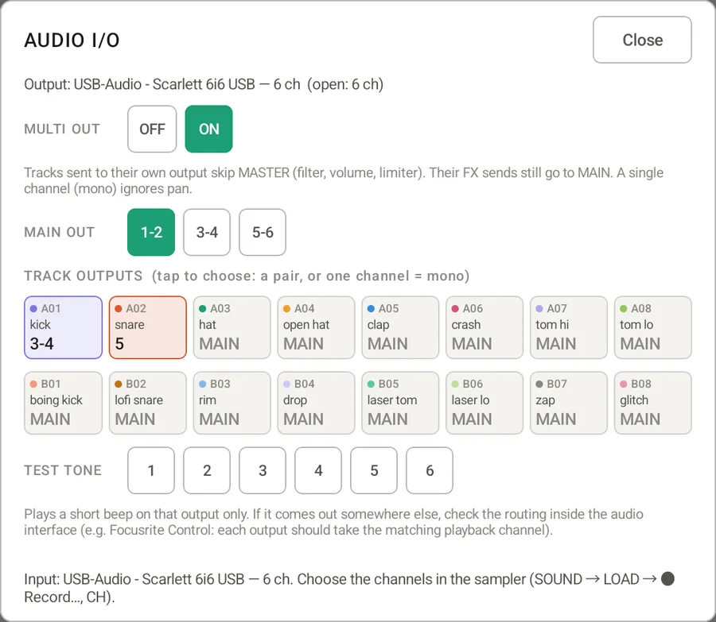
| Item | What it does |
|---|---|
| SOUND OUT | Shown while a USB device is connected. USB (default) = sound comes out of the USB device / THIS DEVICE = sound plays from the tablet or phone itself (wired headphones, then Bluetooth, then the speaker) and the USB device is used only for MIDI and recording input (for example, drive external gear from the interface's MIDI ports while you listen on the tablet). Multi-out is not available with THIS DEVICE. Remembered on this device |
| LATENCY | LOW (default) = the shortest delay / STABLE = a larger output buffer (about 0.1 s) so dropouts and crackle are less likely. Pads respond later in exchange. MIDI out and pad recording are compensated automatically. Remembered on this device |
| MULTI OUT | ON opens all of the device's output channels (OFF = the usual stereo 1-2). Remembered on this device |
| MAIN OUT | The pair that carries MAIN (the overall mix, FX and metronome): 1-2 (default) / 3-4 / 5-6 / … |
| TRACK OUTPUTS | Where each of the 16 tracks goes. Tap and pick from the list: MAIN / a pair (3-4, 5-6 …, stereo) / a single channel (3, 4, 5, 6 …, mono). Tracks sent to the same output are summed. In the mixer you can also tap the output under the channel name to choose it (anything but MAIN turns MULTI OUT on; under MASTER you pick the MAIN pair, or "Stereo only" = OFF) |
| TEST TONE | Plays a short 1 kHz beep on that output only. If you hear it somewhere else, check the routing inside the audio interface (on a Scarlett: Focusrite Control → Routing, each output should take the playback channel with the same number) |
| Problem | Check |
|---|---|
| The sound comes late after a tap | Bluetooth headphones and speakers add a lot of delay. Use wired headphones, the built-in speaker or USB audio. About shows the “Output latency” (about 20–60 ms depending on the device) |
| The sound breaks up | Check whether “underruns” in About increases. Closing other apps can help |
| A saved file is not in the list | Make sure the folder shown at the top of the LOAD list is where you saved. Change folder lets you pick it again |
| A MIDI device does nothing | In MIDI…, check that the device is listed under Connected, IN is on and the channel matches. Last input shows what arrives |
| I made a mistake | ↶ undoes up to 100 steps. The tempo with TEMPO set to GLOBAL, play / stop, moving between patterns and device settings are not undone |
The app version and open source licenses are under About in the logo (≡) menu.
| Item | Spec |
|---|---|
| Tracks | 16 (banks A / B × 8) |
| Patterns | 100 (00–99), each 1–64 steps (16th notes); each track 1/16, 1/16T or 1/8T |
| Track length | 1 to the pattern length (up to 64) per track (AUTO = follow the pattern) |
| Velocity | 0–127 per step |
| Probability / ratchet | Probability 0–100% (5% steps), ratchet 1–4 hits, per step |
| Swing | 0–100 per pattern (100 delays off-beat 16ths by half a step) |
| Tempo | 20–300 BPM |
| Song | Up to 99 rows; each row = pattern × 1–99 repeats |
| Pattern change | While playing: at the end of the pattern / the next beat / the next 16th (Pattern switch, or per PERF button); immediately when stopped |
| Recording | Quantized to the nearest step; one-bar count-in when starting with REC on |
| Roll | 1/4, 1/8, 1/16, 1/32, with or without SLIP |
| Performance screen | 18×10 grid × 4 pages (saved on the device, separately for tablet and phone). 17 button actions (while held / toggle; includes MIDI NOTE / CC / PROGRAM), faders and knobs (FLT / USER / a single parameter / MIDI CC, CC PAN, PITCH BEND, AFTERTOUCH; any of channels 1–16 at once or ALL, to one or more outputs) |
| Undo | Up to 100 steps (steps, kit, song, pattern tempo) |
| Automation | Per pattern. Per-step locks or a line with 8 points per step. 17 track and 14 FX / master parameters |
| Item | Spec |
|---|---|
| Formats | WAV (PCM 8/16/24/32-bit, 32-bit float), AIFF / AIFC, MP3, M4A (AAC), OGG, FLAC |
| Sample rate | 8–192 kHz (converted to the output rate on playback) |
| Length | Up to 60 seconds each (only the first 60 seconds of a longer file are used) |
| File size | Up to 100 MB |
| GENERATE | Up to 2 waves (BASIC 5, SYNTH 5, INST 10, DRUM 8, NOISE 3, SAMPLE), AMP (ADSR), FILTER (LP / HP / BP with envelope), DRIVE; keys C1–B6 × single note / 13 chord types. Rendered at 48 kHz mono, up to 8 seconds, then trimmed and used via the sampling screen |
| Sampling | Built-in mic / USB input / DBR-1's own output (resampling, BARS 1–8, PAD one-shots up to 10 s), up to 60 seconds (48 kHz, mono; stereo inputs as L+R / L / R, devices with 3+ channels by channel number). Saved as 16-bit WAV (RATE can lower it to 8–32 kHz; BIT 12 / 8 also available). Up to 16 slices; time stretch 50–200% (pitch unchanged) |
| Channels | Played as mono (stereo files are mixed down) |
| Memory | Held as 16-bit; only the sounds of the current kit (16) stay in memory |
| Built-in sounds | 211 (16 in the kit + 4 extra, 44.1 kHz / 24-bit; 32 in POP and TRANCE and 159 from the demo songs, 44.1 kHz / 16-bit). The 82 pitched ones show a note or chord name (A4 = 440 Hz) |
| Demo songs | 10 (Sequence Yard / Let's Play Sequence / Yard Lights / Haze Yard / Candy Yard / Velvet Sequence / Abyss Yard / Driving Sequence / Container Yard / Sequence Orbit, about 2 minutes each) |
| Polyphony | One sound per track (a new hit quickly fades out the previous one) |
| Play modes | ONE SHOT / GATE (one step) / BAR (until the end of the pattern); STOP silences everything |
| Choke groups | 4 (a sound in the group stops the others within about 5 ms) |
| start / end | 0–127 (the part of the sample that plays) |
| pitch | −12 to +12 semitones (changes playback speed) |
| decay | About 10 ms – 2 s; 127 = no decay |
| pan | L64 – C – R63 (equal power; MIDI 0–127 with 64 at the center) |
| Values | Amounts such as volume, sends and effects read 0–127, the same as MIDI (they match the CC values sent and received). Pitch is in semitones, EQ in dB, cutoff in Hz |
| Mixer | Track EQ (LO shelf 30–500 Hz, default 100 Hz / MID peak 200 Hz–8 kHz, default 1 kHz, Q 0.7 / HI shelf 2–16 kHz, default 8 kHz; ±12 dB each; the frequencies are not automatable or CC-mapped), volume 0–127, pan, S / M; MASTER 0–127 (saved); meters −48 to 0 dB |
| Reverse | REV SEQ (step order) / REV SND (samples) |
| Item | Spec |
|---|---|
| Track filter | LP12, LP24, HP12, HP24, BP, NOTCH; cutoff 20 Hz – 20 kHz, reso |
| Master filter (FLT) | LP / HP (fader down / up) or BP, 12 dB / 24 dB, reso, AUTO RETURN |
| USER (main fader) | USER1 to USER8 (names up to 5 letters), up to 16 assignments each (16 tracks × 17 parameters / 14 FX & master parameters), amount −100 to +100% (5% steps). Adds to the current value and stops at the limits |
| Reverb | size, damp, mix, pre-delay (0–200 ms); one shared reverb with a send per track |
| Delay | time, feedback, mix, sync (1/4, 1/8, 1/16, 1/32, 3/8, dotted 1/8, FREE 10 ms – 1 s); stereo, one shared delay |
| Distortion | drive, tone, level; per track |
| INSERT | One per track: COMP, CHORUS, PHASER, WAH, SWEEP (tempo-synced), CRUSH. Two knobs + mix. After the filter, before DIST |
| MASTER | Sidechain (one trigger track, depth, release 30–630 ms) and glue comp (threshold 0 to −24 dB, 2:1 to 4:1) |
| Limiter | Just before the output (from about −1 dBFS, no added latency, also applied to exports) |
| Scenes | Two effect settings (A / B) per pattern |
| Item | Spec |
|---|---|
| Autosave | 3 seconds after an edit and when the app closes (the previous version is kept as a backup) |
| Files | .dbrproj (project, includes loaded sounds) / .dbrpatt (pattern) / .dbrkit (kit, includes loaded sounds) / .dbrsnd (one track's sound, includes the loaded sample) |
| Location | DBR-1/Projects, Patterns, Kits, Samples and Sounds inside the folder you choose; cloud via Android's save and share screens |
| Export | Pattern (×1–16) / song / live recording (up to 10 minutes). MIDI (SMF type 0 / 1, 96 PPQ, channel 10 or channels 1–16, automation as CCs at 8 points per step; pattern and song only). STEMS (ZIP: mix + one WAV per track; pattern and song only). WAV (16-bit stereo; pattern / song and STEMS at 48 or 44.1 kHz, recordings at the device's output rate) / M4A (AAC 256 kbps) / MP4 (H.264 720×720 30 fps + AAC; screen recordings are 1280 wide in the screen's aspect ratio). Saved in DBR-1/Exports |
| Item | Spec |
|---|---|
| MIDI in | USB-MIDI. Note-on plays and records tracks (with velocity). Channel ALL / 1–16 |
| MIDI out | One USB-MIDI device. Sends the sequence, rolls and pad hits as notes (channel 10 by default, note-off after 80 ms) |
| Note map | PADS 36–51 / GM DRUMS |
| MIDI clock | Send (24 PPQN = 24 per quarter note, Start / Stop) / receive (follows Start / Stop and tempo; Start / Stop can be ignored) |
| MIDI CC | Receive and send. 31 parameters (17 per track, 14 FX / master), editable assignments and LEARN. Selected track / channel = track |
| Multi-out | With a USB device that has more than 2 outputs, each track can use its own output pair or a single channel (mono), up to 16 ch. The MAIN pair is selectable too. Test tone per channel |
| Audio output | Stereo at the device's output rate (usually 48 kHz), low-latency path. USB audio supported (switches automatically when plugged in) |
| Item | Spec |
|---|---|
| OS | Android 9 or later |
| Memory | 3 GB RAM or more recommended (the app uses about 200 MB while playing) |
| Screen | Landscape. Tablet layout at 1280 dp wide and 600 dp tall or more; phone layout otherwise. Physically large tablets (12-inch class and the like) whose high display density leaves fewer dp get the tablet layout scaled to fit |
| Text size | The device's font size setting applies up to 115% in the app's screens (larger settings stop at 115% so buttons and labels aren't cut off). The manual follows the device setting |
| Permissions | No internet or location. The microphone is used only in the sampling screen. Notifications appear only while exporting or recording. Files are read and written only in the folder you choose |
Latency depends on the device (about 20–60 ms on the devices we tested). Bluetooth devices add a lot of delay.